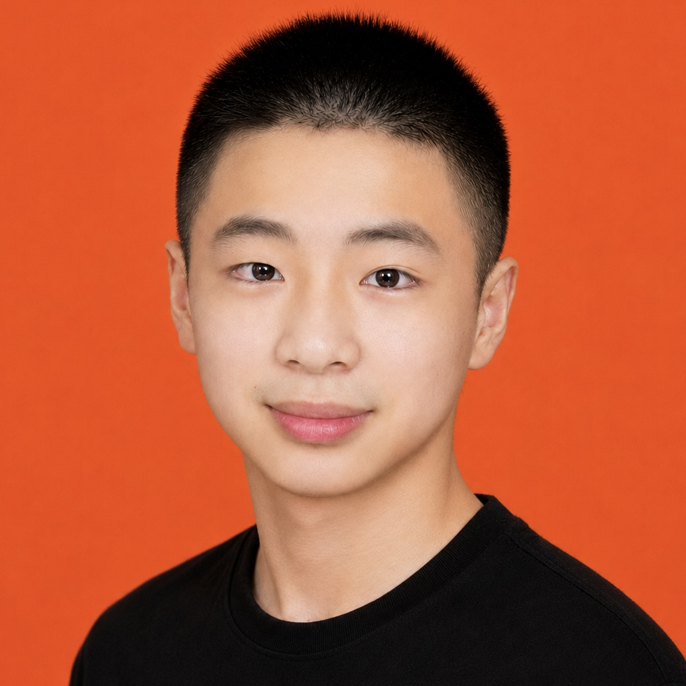

AI 实验室
模型、Agent 与工作流的调试笔记

"我把一半时间给了提示词，一半时间给了ChatGPT——它们其实是同一种耐心。"
我是一名对 AI 与数字创作都感兴趣的实践者。白天研究提示词结构、Agent 工作流和模型能力边界；晚上打开 iPad，用ChatGPT、AI 工具、提示词、LumaFusion 和 iPad 视频创作。这个网站是我把两边的笔记放在一起的地方——既有可以直接复制使用的提示词模板，也有有趣的项目。
如果你也在做类似的事情，欢迎交流；如果你想合作，也欢迎在下面找到我的联系方式。
这三块内容是网站的主要更新板块，对应上面的三张“图层卡”。
记录我和大模型的对话实验：从 Agent 工作流到多模态尝试，每一次调试都是一次小型研究。
整理测试过的高可用提示词模板，涵盖写作、设计、编程与创意生成，持续更新、持续打磨。
用 Apple Pencil 在 Procreate 里画草图、做分镜、练手感——数字画布是离开文字后的另一种表达。
点击任意一张卡片可以跳转到详情（换成你自己的链接或页面）。
这是提示词库里的一条示例，点击按钮直接复制。